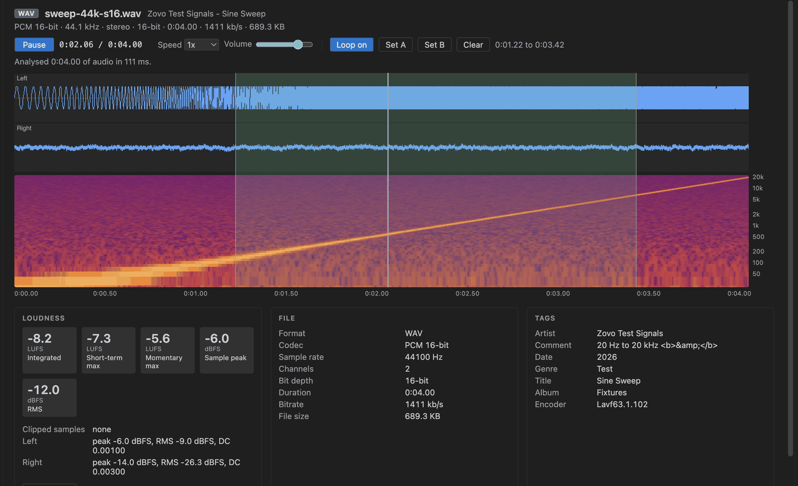

Normalize o loudness do áudio para um alvo em LUFS
Instale o Audio Player & WAV Player (Audio Preview & Loudness Meter). Ele toca arquivos WAV, MP3, FLAC, Ogg e Opus no VS Code com forma de onda, espectrograma e um medidor de loudness grátis (LUFS integrated, short-term e momentary, ITU-R BS.1770-4). A ferramenta Normalize Loudness do Zovo Pro grava um WAV novo em -14, -16, -23 LUFS ou no alvo que você escolher, ao lado do original. Normalize Loudness e Folder Loudness Report têm 3 usos grátis cada, e depois o Zovo Pro custa 19 USD, pagos uma vez.
Grátis, licença MIT. ID da extensão zovo.audio-preview-vscode, versão 0.2.2.
Este guia também está em English · Français · Italiano · Polski · 简体中文

Passo a passo no VS Code
- Instale o Audio Player & WAV Player pelo Marketplace, ou aperte Ctrl+P (Cmd+P no macOS) e rode
ext install zovo.audio-preview-vscode. - Clique em um arquivo
.wav,.mp3,.flac,.oggou.opusno Explorer. Ele abre no Audio Preview. Se abrir outro visualizador, clique com o botão direito no arquivo e escolha "Open in Audio Preview". - Aperte Space para tocar. Arraste sobre a forma de onda para repetir um trecho em loop, ou marque o loop com
[e]. - Veja o painel Loudness, com LUFS integrated, short-term máximo e momentary máximo, sample peak, RMS e samples com clipping por canal. Copy stats copia esses valores para a área de transferência.
- Para mudar o loudness, rode o Normalize Loudness (uma ferramenta do Zovo Pro, veja abaixo).
O que é grátis e o que o Zovo Pro acrescenta
São grátis a reprodução, a velocidade de 0,25x a 2x mantendo o tom, o loop A-B, a forma de onda, o espectrograma, o medidor de loudness, os painéis File e Tags e o Copy stats.
O Normalize Loudness grava um novo arquivo WAV, como mix-14LUFS.wav, ao lado do original, em -14 LUFS (Spotify, YouTube), -16 (Apple Music, podcasts), -23 (EBU R128) ou no alvo que você escolher. O original nunca é alterado. Se o ganho levar o sample peak acima de -1 dBFS, o ganho é reduzido e a mensagem avisa, então você não precisa de outra ferramenta para conferir o pico.
Como usar Normalize Loudness (Zovo Pro)
- Abra o arquivo de áudio e rode o Normalize Loudness pela barra de título do editor, ou clique com o botão direito no arquivo no Explorer. Pela Command Palette, rode "Audio Preview: Normalize Loudness to -14 / -16 / -23 LUFS (Pro)".
- Escolha -14 LUFS, -16 LUFS, -23 LUFS ou "Other target..." (um número de -40 a -5).
- O novo WAV é gravado ao lado do original, e uma mensagem mostra o loudness antes e depois, o ganho e o pico. Um uso só conta quando o arquivo é gravado.
Normalize Loudness funciona 3 vezes no seu computador antes de pedir uma licença. Não há janela pop-up nem contagem regressiva.
O Zovo Pro custa 19 USD, pagos uma vez só. Não é assinatura, e a licença libera as ferramentas Pro em todas as extensões Zovo, não só no Audio Player & WAV Player. Depois do pagamento com cartão (Stripe), a chave de licença aparece na página seguinte. No VS Code, rode "Zovo Pro: Enter Zovo Pro license key" pela Command Palette e cole a chave. A chave é conferida no seu computador, sem acesso à rede. Pelo GitHub Sponsors, escolha o nível "$19 one time" e depois rode "Zovo Pro: I already paid: unlock with GitHub Sponsors".
Uma equipe de 5 pessoas paga 59 USD uma vez só (com cartão). Todas as regras e ferramentas Pro estão na página do Zovo Pro (em inglês).
Passo a passo no Cursor, Windsurf ou VSCodium
- Abra a visão Extensions com Ctrl+Shift+X (Cmd+Shift+X no macOS).
- Busque
zovo.audio-preview-vscodee clique em Install. Cursor, Windsurf e VSCodium instalam extensões do Open VSX, onde esta se chamazovo/audio-preview-vscode. - Se o seu editor não tiver galeria, baixe o arquivo .vsix na página do Open VSX e rode "Extensions: Install from VSIX...".
- Depois disso, tudo funciona como no VS Code.
O que o Audio Player & WAV Player faz
- WAV (
.wav,.wave) PCM de 8 a 32 bits, float de 32 e 64 bits, A-law, mu-law e RF64, lido em blocos. - FLAC, MP3, Ogg Vorbis (
.ogg,.oga) e Opus (.opus, com um decodificador WebAssembly que vem na extensão). - LUFS integrated, short-term e momentary, sample peak, RMS, DC offset e samples com clipping por canal.
- Até 8 faixas de forma de onda e um espectrograma com eixo de frequência logarítmico.
- Tags de ID3v1, ID3v2, RIFF INFO, Vorbis comments e átomos do iTunes.
O que ele não faz
- O Normalize Loudness lê arquivos WAV. Para MP3, FLAC, Ogg, Opus ou M4A, ele precisa do seu próprio ffmpeg (configuração
audioPreview.ffmpegPath) em um workspace confiável, e a saída é um WAV de 16 bits. - A saída é sempre um arquivo WAV, não MP3 nem FLAC.
- O pico é um sample peak, não um true peak com sobreamostragem, e ainda não há loudness range (LRA).
- Arquivos
.m4ae.aacsó mostram o cabeçalho e as tags se você não tiver o ffmpeg. Nada vem na extensão nem é baixado. - Arquivos comprimidos são decodificados inteiros. Acima de 600 MB de amostras decodificadas (
audioPreview.maxDecodedMB), eles só tocam.
Perguntas frequentes
É grátis?
Tocar áudio, a forma de onda, o espectrograma e o medidor de loudness são grátis. Normalize Loudness e Folder Loudness Report são ferramentas Pro com 3 usos grátis cada. Depois disso, o Zovo Pro custa 19 USD, pagos uma vez, para todas as extensões Zovo.
Ele altera o meu arquivo original?
Não. O Normalize Loudness grava um WAV novo ao lado do original, que nunca é alterado.
O medidor de LUFS é preciso?
Ele segue a ITU-R BS.1770-4 e ficou a menos de 0,1 LU do ebur128 do ffmpeg nos arquivos de teste da extensão.
Dá para normalizar um MP3?
Só se o ffmpeg estiver instalado e for encontrado pela audioPreview.ffmpegPath. O resultado é um WAV de 16 bits, não um MP3.
Saiba mais
O guia em inglês traz mais detalhes e outras opções. Cada recurso e configuração está na página do Audio Player & WAV Player (em inglês).
Informações conferidas em 12 de novembro de 2026 na versão atual do Marketplace.